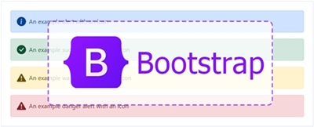

Hojas de Estilo en Cascada CSS
CSS Corresponde a las siglas en inglés de “Cascading Style Sheets”. Una hoja de estilos es una serie de códigos que definen el aspecto o presentación de los elementos de una página. Siendo así el término “cascada”, se refiere a cómo se encuentran distribuidos los elementos en la hoja de estilo, desde el componente primario a los detalles más específicos. Esta técnica consiste en separar el diseño del contenido, de manera que las indicaciones para conformar el diseño se agrupan en una hoja de estilo o archivo que está fuera del contenido del documento de la página HTML.
Frameworks CSS
Un Framework es una estructura base utilizada como punto de partida para elaborar un proyecto con objetivos específicos, por lo tanto un framework de CSS es una biblioteca de estilos genéricos que puede ser usada para implementar diseños web. Aportan una serie de utilidades que pueden ser aprovechadas frecuentemente en los distintos diseños.
Mockup

Referencias Bibliograficas
Poveda, P. E. M. (2014, 2 abril). Repositorio Universidad Técnica de Ambato: “El maquetado a base de scripts y hojas de estilo en cascada (CSS) y su incidencia en la optimización de un sitio web”. repositorio.uta.edu.ec. https://repositorio.uta.edu.ec/jspui/handle/123456789/7146
Rodríguez, R. A. (2018, 25 junio). Análisis de frameworks web adaptativos basados en HTML5. sedici.unlp.edu.ar. http://sedici.unlp.edu.ar/handle/10915/67599